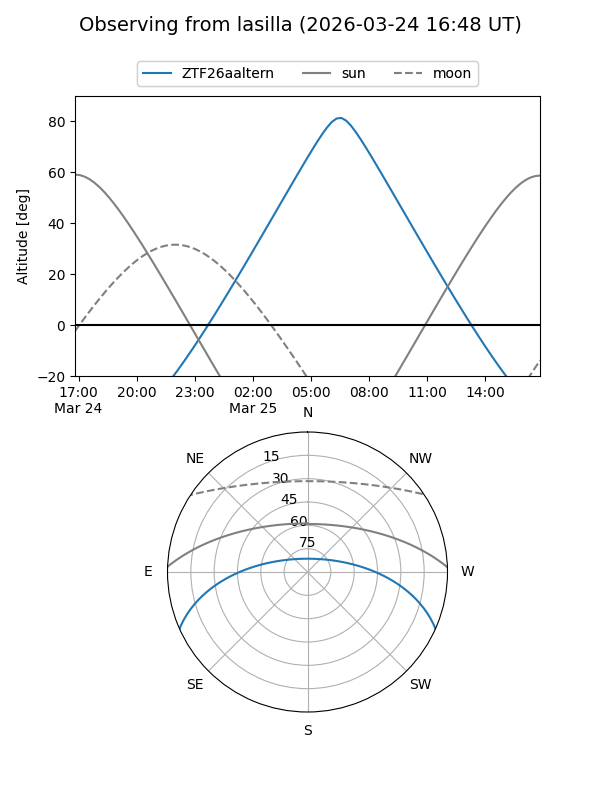
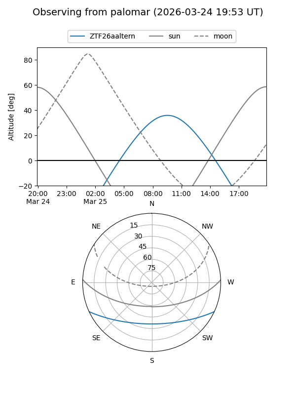

ZTF26aaltern
Target ZTF26aaltern at 2026-03-25 10:03
Aliases and brokers:
FINK: link
Lasair: link
ALeRCE: link
alt names
ZTF26aaltern (ztf,fink_ztf)
Coordinates:
equatorial (ra, dec) = 208.8265,-20.57266
equatorial (HMS+DMS) = 13:55:18.35,-20:34:21.56
galactic (l, b) = (322.5341,+39.85560)
Flags:
Photometry:
last ztfg=17.28
1 ztfg detections
Lightcurve
Visibility


Additional plots